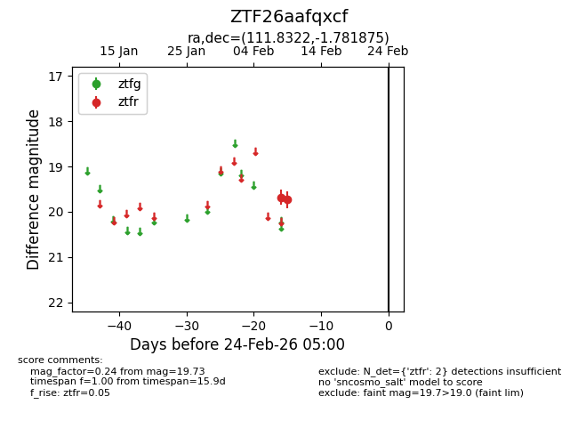
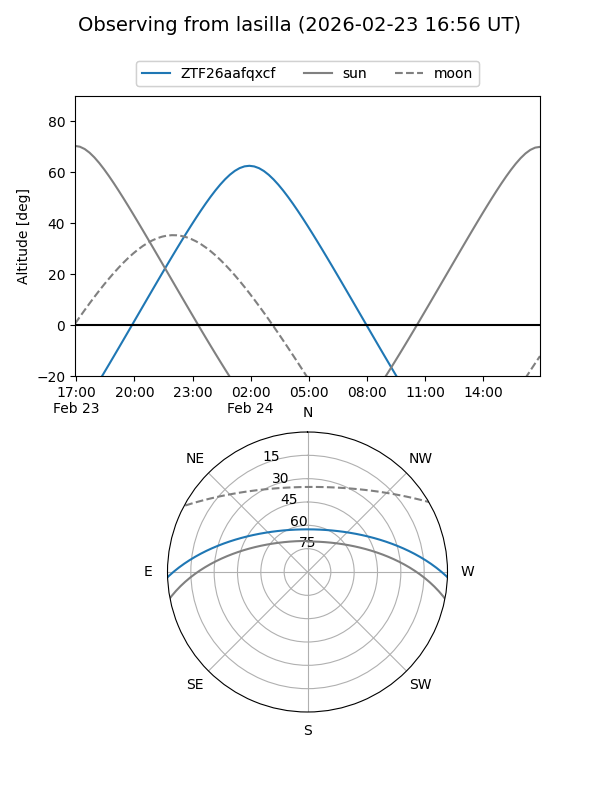
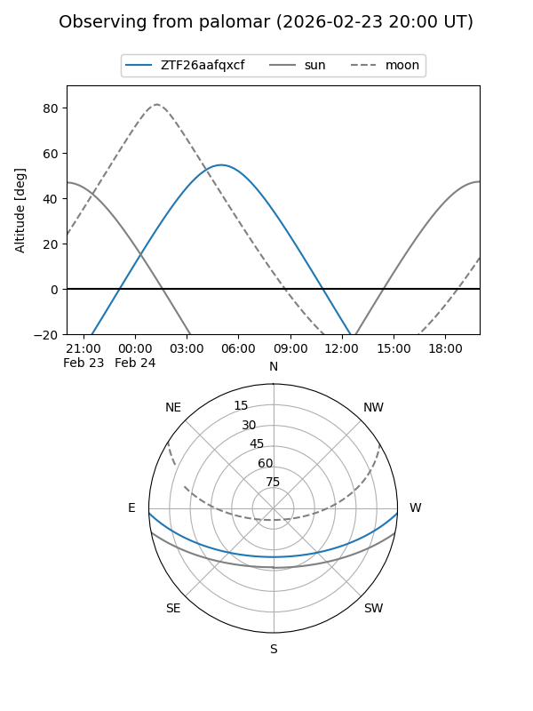

ZTF26aafqxcf
Target ZTF26aafqxcf at 2026-02-24 09:08
Aliases and brokers:
FINK: link
Lasair: link
ALeRCE: link
alt names
ZTF26aafqxcf (ztf,fink_ztf)
Coordinates:
equatorial (ra, dec) = 111.8322,-1.78188
equatorial (HMS+DMS) = 07:27:19.72,-01:46:54.75
galactic (l, b) = (218.6441,+7.15535)
Flags:
Photometry:
last ztfr=19.73
2 ztfr detections
Lightcurve

Visibility


Additional plots